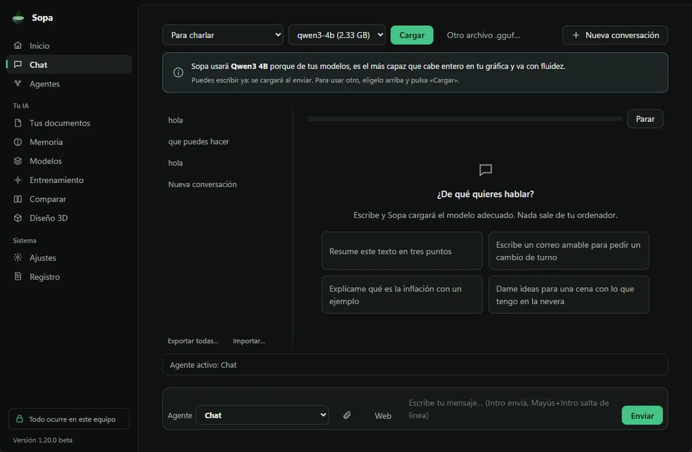
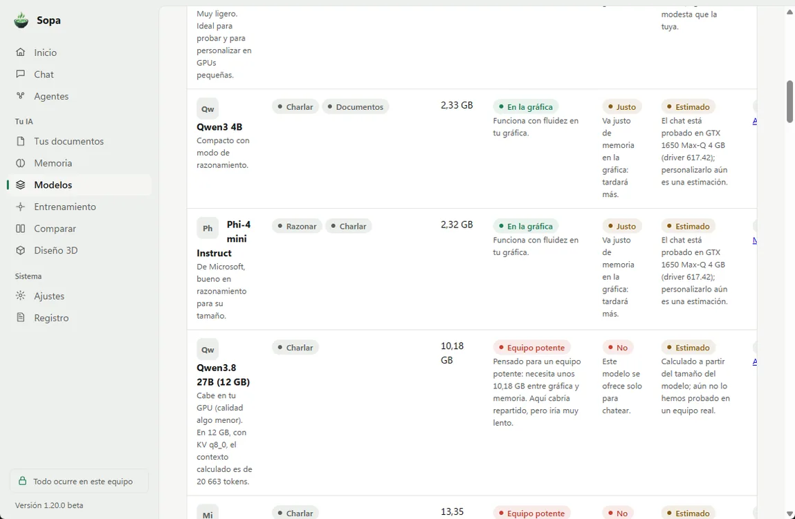
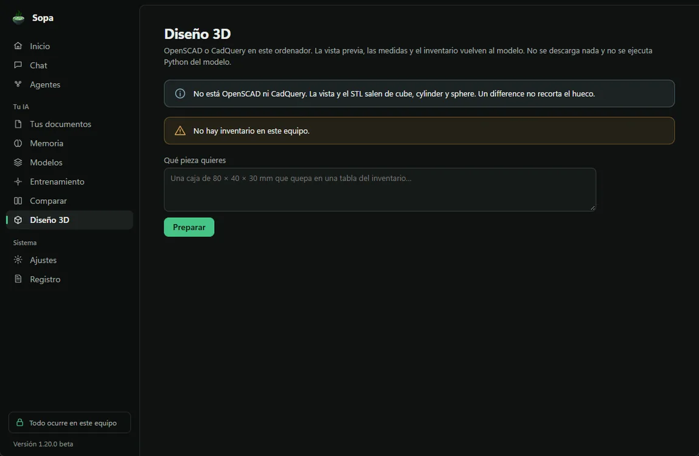

Sopa mira tu ordenador y te dice qué IA le va bien. Sin Python, sin terminal, sin configurar nada.
Sopa Desktop para Windows
Tu inteligencia artificial.
Tu ordenador.
Tus reglas.
Habla con una IA y enséñale lo tuyo, en tu propio ordenador. Sin cuentas y sin tecnicismos.

Por qué Sopa
Sencilla. Tuya. Tranquila.
Tu Sopa es tuya. Sin cuentas y sin clave de licencia.
Personaliza tu IA aunque tu ordenador no sea un monstruo. Probado en un portátil con una gráfica de 4 GB.
Sopa Mobile: chatea con la IA de tu PC desde el móvil, en la Wi-Fi de casa.
Ya funciona
Todo lo que necesitas.
Nada que configurar.
Conoce tu ordenador
Sopa detecta tu equipo y te dice qué modelos van bien: verificado, estimado o no soportado. Si un modelo no cabe entero en tu gráfica, Sopa reparte el trabajo con la memoria del ordenador.
Descarga con un clic
Elige entre 41 modelos, cada uno con su especialidad. Sopa te recomienda los que van bien en tu equipo, marca como «Equipo potente» los que aquí irían muy lentos y comprueba cada descarga.
Chatea sin conexión
Habla con tu IA aunque no tengas internet. Si quieres que razone más, elige «Para razonar» y Sopa te dice qué modelo usará.
Entrena tu IA
Enséñale con tus propios ejemplos. Sopa mira tu gráfica, elige sola cómo entrenar y te dice cuánto tardará. Después, exporta tu modelo en formato GGUF.
Tus modelos y conversaciones, contigo
Renombra, borra, exporta e importa tus modelos. Sopa comprueba cada paquete antes de instalarlo y nunca sobrescribe nada. Exportar un modelo grande muestra una barra de progreso. Tus conversaciones también se exportan e importan.
Actualizaciones con tu permiso
Sopa puede buscar si hay una versión nueva. Solo se instala si tú quieres. Cada versión va firmada y, si algo falla, vuelve sola a la anterior.
Tus documentos, a fondo
Añade una carpeta entera de PDF, Word, .md o .txt. Sopa la lee en segundo plano, con progreso, y puedes cancelar cuando quieras. Al revisarla otra vez, solo lee lo que ha cambiado. Busca por palabras y por significado, todo en tu equipo. Resume y compara documentos: cada dato cita archivo y página, y al pulsar la cita ves el texto exacto. Si el modelo cita algo que no existe, Sopa te avisa. Lee también PDF escaneados, con el OCR que ya trae Windows. El OCR va página a página. Si un documento tarda demasiado, Sopa guarda lo leído hasta ese momento y te avisa. Y un documento no puede darle órdenes a Sopa: su texto es solo contenido.
Tus documentos. Probado en el portátil de referencia con 209 documentos reales (832 páginas). Leerlos todos la primera vez tardó 8 min; volver a revisarlos sin cambios, 0,1 s. En 26 de 26 preguntas, el documento correcto salió entre los 4 primeros. Con Qwen3 4B, 24 de 26 respuestas fueron correctas, ninguna con citas inventadas, en unos 12 s cada una. Para buscar por significado, Sopa descarga la primera vez un modelo pequeño (132 MB) que funciona en tu equipo.
Tranquila por fuera.
Potente por dentro.
Un diseño sereno, en tema claro u oscuro.
Estas capturas son de la 1.20.0, cuando Sopa estaba en beta. La 2.0.0 estrena una interfaz nueva y todavía no tenemos capturas suyas.


Memoria, modelos y entrenamiento
Te recuerda. Elige por ti.
Y se entrena sin jerga.
Sopa te recuerda
Dile lo que quieres que tenga en cuenta siempre: «trátame de tú», «trabajo en una gestoría». Lo usa en todas tus conversaciones. Puedes verlo, cambiarlo, borrarlo o apagarlo. Se guarda solo en tu equipo. Si escribes «Recuerda que…» en el chat, Sopa te pregunta antes de guardarlo.
Elige el modelo por ti
Sopa te dice qué modelo usará y por qué, y lo carga sola al enviar. Con «Para…» eliges charlar, razonar, programar o ir rápido. Prefiere los que ya tienes y los que caben enteros en tu gráfica. Si hay uno mejor, te lo sugiere. Y si el único disponible irá muy lento, te avisa claro.
Entrena tu IA sin jerga
Sopa te propone el modelo más capaz probado en un equipo como el tuyo y te lo explica con palabras normales. Lo técnico queda guardado en «Ver detalles», por si te interesa.
Probado en el portátil de referencia, con una gráfica GTX 1650 de 4 GB. El primer mensaje, con Qwen3 4B cargándose solo, tardó 10,7 s. Después, unos 2,5 s por respuesta corta. Para programar, Sopa eligió Qwen2.5 Coder 7B y avisó de que iría muy lento. Para entrenar, propuso Qwen2.5 1.5B: unos 3 minutos.
Privacidad
La IA, en tu ordenador.
Tus datos se quedan ahí.
La inteligencia artificial funciona ahí. Tus conversaciones, documentos, recuerdos y entrenamientos se quedan en tu ordenador. También las acciones sobre archivos.
Sopa no tiene telemetría, analítica ni identificadores del equipo. Al abrir, si dejas marcado «Buscar al abrir Sopa» (viene activado), pregunta a GitHub si hay una actualización. Los modelos se descargan de Hugging Face cuando tú lo pides. Nosotros no recibimos esas peticiones.
En pruebas «Buscar en la web» está en pruebas. Viene apagada. Si la enciendes, la consulta va desde tu ordenador a DuckDuckGo, que ve tu IP. Si se lee una página, esa web ve tu IP y la dirección pedida. Nosotros no recibimos ni la búsqueda ni las páginas.
- Sin cuentasAbres la app y empiezas.
- Chat sin conexiónCuando el modelo ya está descargado.
- Sin telemetríaNo enviamos tus conversaciones. No hay analítica ni identificadores del equipo.
- Sin APIs de pagoNingún coste por mensaje.
Asistente · Beta
La base del asistente.
Lee, busca y resume por ti.
Pídele en el chat que lea un archivo, que busque una palabra o que te resuma un documento. Lee archivos .txt y .md, Word (.docx), PDF con texto y Excel (.xlsx).
Lee, busca y resume
Lee un archivo de texto o Markdown. Busca una palabra en tus archivos. Y te resume uno. Leer, buscar o resumir no cambia nada.
Tú pones los límites
Solo entra en las carpetas que autorices. Al empezar no hay ninguna. Cada carpeta tiene cuatro interruptores: Leer, Buscar, Resumir y Cambiar archivos. Apaga los que quieras. Antes de cambiar algo, te enseña qué va a hacer y espera a que lo confirmes.
Un archivo no le da órdenes
Si un documento dice «borra todo», Sopa no lo hace. Lo que pone en tus archivos es solo contenido. No ejecuta programas y no lee fuera de la carpeta.
Desde el móvil · Beta
También desde el móvil.
Con Sopa Mobile, pídele desde el móvil que lea, busque o resuma en tus carpetas. Solo en las que tú permitas.
- Apagado al empezar. Cada carpeta tiene un interruptor: «Permitir desde el móvil». Viene apagado, también en las carpetas de antes, y solo se enciende desde el PC. El móvil no puede activarlo. No abre una conexión por sí solo.
- En pruebas También los agentes. Se sigue puliendo. Desde la 1.12, Archivos, Documentos, Investigación y Automatizaciones, usados desde el móvil, solo entran en las carpetas con este interruptor. Un documento ya indexado entra en Documentos o en Investigación solo si su archivo está dentro. El ordenador sigue viendo la carpeta aunque el interruptor esté apagado. Encendido, lo leído lo procesa el modelo en el ordenador y la respuesta vuelve al móvil por el acceso de casa o, si el túnel está activo, por el túnel. El interruptor no envía la carpeta a DuckDuckGo ni a un servidor de Sopa.
- Con tu cara o tu huella. Solo entra un móvil enlazado, con su passkey.
- Confirmas en el móvil. Para cambiar archivos, la carpeta también necesita «Cambiar archivos» encendido. Ves qué va a hacer y lo confirmas en ese mismo móvil. Tienes 5 minutos para confirmarlo.
- Quitas el acceso al momento. Si quitas un móvil desde el PC, deja de entrar enseguida, también a lo que tuviera pendiente de confirmar.
- Todo queda anotado. El registro de tu PC marca lo que se pidió desde el móvil, con el nombre del móvil.
Después de actualizar Sopa, cierra Sopa Mobile en el móvil y vuelve a abrirlo.
Beta. Aún no lo hemos probado con un iPhone real ni con un Android real. Lo hemos probado en el portátil de referencia, con Qwen3 4B y con móviles de prueba simulados, que usan una passkey de prueba.
Probado en el portátil de referencia con Qwen3 4B. Con Leer apagado, no leyó nada. Con Cambiar archivos apagado, no cambió nada. Y un archivo que pedía borrarlo todo no cambió nada. Aún no lo hemos probado con varios modelos. Desde la 1.4.1, usa el nombre de archivo que le pides. Si no pones la extensión y solo hay un archivo con ese nombre, lo encuentra igual. De momento hace una cosa por mensaje. Desde la 1.6 también lee Word, PDF con texto y Excel. Solo los lee: no crea ni cambia archivos de Office, no ejecuta macros y no calcula fórmulas. Los PDF escaneados no se leen. Los .docm, .xlsm y los archivos con contraseña se rechazan con un aviso. Lo probamos en el portátil de referencia con Qwen3 4B y documentos creados para la prueba. Desde el móvil, con móviles de prueba simulados: aún no con un iPhone ni un Android reales. Cada lectura queda en un registro de tu ordenador, sin el texto del archivo, y puedes borrarlo.
Acciones · Beta
Acciones en Windows.
Tú decides. Sopa lo hace.
Pídele en el chat que ordene tus archivos. Antes de tocar nada, te enseña qué va a hacer.
Ordena por ti
Crea carpetas y archivos de texto o Markdown. Renombra, mueve, copia y manda a la papelera.
Solo donde tú digas
Trabaja solo en las carpetas que autorices. Al empezar no hay ninguna y las acciones vienen apagadas. Siempre ves una vista previa. Sin tu confirmación, no cambia nada.
Siempre con vuelta atrás
Deshaz la última acción cuando se pueda. Lo que va a la papelera se recupera desde la Papelera de reciclaje. Nunca borra nada para siempre ni ejecuta programas.
Un registro local guarda lo que ha hecho. No sale de tu ordenador y puedes borrarlo. Desde la 1.5, también puedes pedirlas desde Sopa Mobile, con las mismas reglas que el asistente y con «Permitir desde el móvil» encendido en esa carpeta.
Organizar · Beta
Organiza tus archivos.
Y vuelve atrás si quieres.
Pídele en el chat que ordene una carpeta. Te enseña todos los cambios antes de mover nada.
Ordena como tú digas
Por tipo, por fecha o por una parte del nombre. También aparta los archivos repetidos a una carpeta llamada Duplicados. No borra nada.
Nada se mueve sin ti
Solo en las carpetas que autorices, con «Cambiar archivos» encendido. Ves la lista entera de cambios, hasta 500. Hasta que confirmas, no se mueve nada. Si un nombre ya existe, no lo pisa: lo renombra, por ejemplo «foto (2).jpg».
Deshacer de verdad
Deshacer devuelve todo lo que puede. Si un archivo ya no está o su sitio está ocupado, no se atasca. Al final te dice qué no ha podido devolver.
Al buscar duplicados, Sopa para a los 15 segundos o al leer 2 GB, y te avisa de que no ha terminado. Por tipo, fecha o nombre, solo mira los archivos sueltos de la carpeta, no los que están dentro de otras carpetas. Desde el móvil, hace falta «Permitir desde el móvil» y confirmar en ese mismo móvil. Lo probamos en el portátil de referencia con Qwen3 4B: ordenar por tipo y deshacer dejó la carpeta exactamente como estaba. Aún no lo hemos probado desde el móvil, ni buscando duplicados entre muchos archivos.
Tareas de varios pasos · Beta
Varios pasos.
Una sola petición.
Pídele algo que lleve varios pasos, como leer una nota y escribir un resumen. Sopa te enseña el plan entero antes de hacer nada.
Varias cosas de una vez
Junta lecturas y cambios en un plan de hasta 8 pasos. Puede usar las acciones y organizar. Puedes cancelar entre pasos.
Nada se escribe sin ti
Las lecturas van solas, dentro de las carpetas que autorices. Cada cambio se confirma, paso a paso. Hasta que confirmas, no se escribe nada en tu disco.
Copia lo que lee
Lo que escribe a partir de un archivo lo copia tal cual, sin inventar. Si el modelo deja un hueco como «[resumen]», Sopa lo rellena con lo leído o te avisa. Nunca escribe el hueco en tu archivo.
Si un paso falla, Sopa para y deshace los cambios de ese plan. Si algo no ha podido volver, te lo dice. Tiene un tope de 45 segundos de trabajo y de 2000 letras de texto leído: si no cabe todo, te avisa de que es solo una parte. Desde el móvil hace falta «Permitir desde el móvil», y cada cambio se confirma en ese móvil, antes de 5 minutos. Está pensado para Qwen3 4B en tu equipo. De esta versión aún no tenemos pruebas en un equipo real que contarte.
En pruebas Desde la 2.0.0, los planes van de 2 a 8 pasos, con una vista previa de lo que dicen los archivos que se leen. Si pides los códigos de un archivo, el que se escribe después de leerlo los copia tal cual; si no los copia, no se escribe.
Automatizaciones · Beta
Automatizaciones.
Lo que repites, con un botón.
Guarda una tarea en tu ordenador y lánzala cuando quieras. O deja que se lance sola.
A tu ritmo
Con su botón, a una hora, cada día, cada semana o cuando aparece un archivo en una carpeta autorizada. Puede hacer un plan de varios pasos o una sola acción del asistente.
Lo confirmas al crearla
Una lectura puede ir sola. Si cambia archivos, la confirmas al crearla, con el plan exacto y las carpetas fijadas. Y eso solo se hace desde el ordenador.
Con freno y deshacer
Como mucho, una vez cada 5 minutos y 500 cambios cada vez. Si falla 3 veces seguidas, se pausa. Cada vez queda en el registro y se puede deshacer.
Solo funciona con Sopa abierta. No usa el Programador de tareas de Windows ni pide permisos de administrador. Lo que pone en un archivo no cambia la automatización. Desde el móvil, con «Permitir desde el móvil», puedes verlas, lanzarlas o pausarlas. Reanudarlas, o crear y cambiar las que editan archivos, solo desde el ordenador. De esta versión aún no tenemos pruebas en un equipo real que contarte.
Sopa Mobile · Beta
Sopa Mobile.
Tu IA, también en el móvil.
Chatea con la IA de tu PC desde el iPhone o un Android. En la Wi-Fi de casa y, ahora, también fuera.


Un solo código QR
En Ajustes › Sopa Mobile activas el acceso, que viene apagado. Escaneas el código «Enlaza tu móvil» y un asistente para iPhone y Android te guía. El código vale una sola vez y caduca a los 10 minutos.
La misma conversación
El historial se guarda en tu ordenador, no en el móvil. Lo que escribes en uno aparece en el otro. La respuesta llega desde la IA de tu PC, con uno de tus modelos ya descargados.
Sin cuenta de Sopa
Sin servidor de Sopa y sin cuenta. Sopa escucha solo en tu red de casa y, si lo activas, en tu túnel privado. Siempre con conexión cifrada. Desde el ordenador ves tus móviles y puedes quitarle el acceso a cualquiera. Al cerrar Sopa o apagar el interruptor, el acceso se cierra.
Fuera de casa · Beta
También fuera de casa.
Activa «Usar fuera de casa» en Ajustes › Sopa Mobile. Viene apagado. Tu móvil llega a tu PC por un túnel privado, solo vuestro. Sin cuenta y sin servidor de Sopa.
- Con WireGuard. El túnel funciona con WireGuard. En el PC lo instalas tú, desde su web oficial, y Windows te pide permiso de administrador. Sopa no instala nada: te deja el archivo del túnel y el enlace.
- Solo hasta Sopa. Por el túnel, el móvil solo llega a Sopa. No ve el resto de tu casa.
- Paso a paso. Primero enlazas el móvil en casa. Sopa te explica en pantalla cómo preparar el router.
Beta. «Usar fuera de casa» está probado en un PC. Aún no lo hemos probado con un router real ni fuera de casa con un móvil real. El iPhone sí está probado (el chat), en la red de casa. Con Android, aún no. Puedes añadir Sopa a la pantalla de inicio del móvil.
En pruebas Internet
Buscar en la web.
Apagado hasta que tú lo enciendas.
Un interruptor en Ajustes. Empieza apagado.
Se sigue puliendo. El botón «Web», junto al cuadro del chat, enciende y apaga el mismo ajuste, y se ve claro cuando está encendido. En Sopa Mobile se ve y se cambia el mismo ajuste.
El chat no sale a buscar
Apagado, no hay conexión para buscar. El chat responde que buscar en la web está apagado.
Una búsqueda o una página
Por cada mensaje, el modelo puede pedir una búsqueda, de 2 a 160 caracteres, o la lectura de una página. La búsqueda es un envío a la versión HTML de DuckDuckGo. La lectura es una petición a esa dirección, con como mucho 3 redirecciones, y cada destino se comprueba antes. Solo valen direcciones http y https públicas: se rechazan las de este equipo y las de una red privada. Se quedan como mucho 5 resultados. La respuesta cita las páginas. El texto de la web es un dato, no una orden.
Tu IP, y la consulta
Sale la consulta, que redacta el modelo, hacia DuckDuckGo, o la dirección de la página que se lee. La conexión la abre tu ordenador: DuckDuckGo, o esa página, ven tu IP. La petición lleva la cabecera User-Agent: Sopa (buscar en la web). No se envían cookies, cuentas, claves, documentos ni el resto de la conversación. En tu equipo se quedan el ajuste, la respuesta y las fuentes de esa conversación. No hay un historial de búsquedas aparte.
En pruebas Agente
Investigación.
Se sigue puliendo. En el chat, en el ordenador y en Sopa Mobile, hay un selector de agente. Por defecto es el chat, y se ve cuál está activo. Investigación busca en la web solo si «Buscar en la web» está encendido. Si está apagado, lo dice y usa solo los documentos de este equipo: «Buscar en la web está apagado. Uso solo los documentos de este equipo.»
- En el equipo. Los documentos se buscan en el índice del ordenador. No se suben. Documentos, Archivos y Automatizaciones no se conectan. Solo Investigación puede salir a la web, y solo con el ajuste encendido.
- Varios pasos. Encendido, puede hacer hasta 6 búsquedas o lecturas. Cada búsqueda puede tener hasta 400 caracteres, redactados por el modelo. Es el mismo DuckDuckGo, con la misma cabecera, y el mismo rechazo de direcciones privadas. No escribe archivos.
- Se ve lo que hizo. La respuesta enseña «He buscado «…» en la web.» y, si hay resultados, el título y la dirección de cada página. Si lee una página, «He leído» y cuál. Un fallo de red se enseña, no se disfraza de respuesta.
- Desde el móvil. La búsqueda la hace el ordenador, no el móvil. En la respuesta se ve la consulta y las páginas leídas. Los documentos de este agente solo entran si el archivo está en una carpeta con «Permitir desde el móvil».
Rendimiento real
Rápida incluso
en un portátil modesto.
Medido en un portátil con una GTX 1650 de 4 GB.
133tok/s conversando
con un modelo de 0.5B
con un modelo de 0.5B
~59tok/s con Qwen3.5 2B
~18tok/s con Phi-4 mini
Los modelos de 7 a 9B, en esta gráfica de 4 GB, van por debajo de 5 tok/s (entre 2,3 y 4,4): Sopa los marca como «Equipo potente». En esa misma gráfica, entrenar Qwen2.5 0.5B con 200 ejemplos tardó 152 s y exportarlo, 38 s. El modelo personalizado responde a unos 110 tok/s. Exportar Qwen3 4B (2,33 GB), con barra de progreso, tardó 6,5 s. Los resultados varían según el equipo.
Catálogo
LLM locales en español.
Elegidos para tu equipo.
41 modelos, cada uno con su especialidad: charlar, razonar, programar, ir rápido o leer documentos.
- Qwen3 4B
- Qwen3.5 2B
- Qwen3.5 9B
- Phi-4 mini
- Gemma 4 E4B
- Granite 3.3 2B
- Qwen2.5 Coder 7B
- DeepSeek-R1 Distill 7B
- Mistral Small 3.2 24B
Aquí destacamos algunos con licencia Apache 2.0 o MIT. Otros del catálogo tienen condiciones propias de su autor; Sopa te las muestra antes de descargar. Nuevos en la 1.16: Qwen3.8 27B en dos versiones (Q4_K_M, la de más calidad pero lenta con 12 GB, y UD-IQ3_XXS, que cabe en una gráfica de 12 GB), Mellum 2.1 12B, MiMo V2.6 Distill 9B, Gemma 4 12B y Qwen3.6 35B-A3B. MiMo V2.6 Pro, Kimi K3 y GLM 5.3 Flash solo se muestran en el catálogo, para equipos muy potentes.
Nuevo en el catálogo: Qwen2.5 7B (IQ3_XS), una opción lenta solo para chatear. Va en el procesador, sin gráfica, con el proceso dentro de 4 GiB de memoria. Medido en un portátil de 16 GB con el proceso limitado a 4 GiB y solo con el procesador: 2,5 tok/s y un máximo de 3,41 GiB. No vale para un equipo con 4 GB de RAM en total.
El simulador es un recorrido por la interfaz, con respuestas de ejemplo. Qué modelos van bien en tu ordenador lo calcula la app al instalarla.
Software libre
Libre y gratuita.
Para todos.
Sopa es software libre y gratuito, con licencia GNU GPLv3. Copyright: Miguel Rodríguez Saiz.
Usar
Puedes usar Sopa en tu ordenador, sin pagar.
Estudiar
Puedes estudiar cómo está hecha.
Modificar
Puedes modificarla para adaptarla a lo que necesitas.
Compartir
Puedes compartirla con otras personas.
Si distribuyes una versión modificada, esa versión debe seguir siendo GPLv3.
Copyright © 2026 Miguel Rodríguez Saiz.
Oferta del código fuente (GPLv3). Cualquiera puede pedir el código fuente correspondiente de Sopa 2.1.0 (etiqueta v2.1.0), la versión que se descarga en esta web, abriendo un issue en github.com/ardu01/sopa-web/issues. Se entrega sin coste. La oferta vale para cualquier persona que la reciba y se mantiene al menos tres años desde la última vez que se ofrezca esta descarga.
Texto oficial: GNU GPLv3. El archivo LICENSE de este repositorio es ese texto, sin cambios. El aviso de copyright está en NOTICE.
En pruebas Nuevo en la 2.0.0
De un chat
a un equipo.
Desde la 2.0.0, Sopa es un equipo de agentes. Cada uno, con su nombre, su trabajo, su hilo, su memoria y su cara.
-
Hasta la 1.20
Un chat. Una Sopa.
Escribes. Sopa elige el modelo y te responde. Todo se queda en tu ordenador.
El chat de la 1.20.0, la versión anterior. -
El cuenco de Sopa.Conoce al equipo -
En la 2.0.0
Nombre, trabajo y cara.
Un equipo, en lugar de un solo chat. Cada agente con su trabajo. Investigación, Documentos, Archivos y Automatizaciones usan herramientas, y antes de escribir un archivo nuevo te enseñan la vista previa. Toca una cara para verla.
Tu equipo
Sopa Listo
Conversa contigo.Ilustración. No es una captura de la app.
También en camino
Y algo más.
Sin fecha y sin precio. La versión publicada es la 2.1.0.
Ver imágenes
Tu IA podrá entender capturas e imágenes. Ya está preparado, pero aún falta terminarlo y probarlo en equipos modestos.
Guías
Aprende IA local, con calma.
¿Qué es una IA local y por qué usarla?
Leer ›Cómo usar IA local en Windows sin saber programar
Leer ›¿Cuánta VRAM necesito para una IA local?
Leer ›Cómo elegir un modelo según tu ordenador
Leer ›IA local frente a la nube: privacidad
Leer ›Cómo resumir tus documentos con Sopa
Leer ›Qué es la cuantización, explicado fácil
Leer ›
Preguntas frecuentes
Todo sobre la IA local.
¿Qué es una IA local?
Es una inteligencia artificial que se ejecuta en tu propio ordenador, en lugar de en servidores de terceros. Con Sopa descargas un modelo de lenguaje (LLM) y conversas con él directamente en tu equipo Windows, en español y sin programar.
¿Es privada?
La inteligencia artificial funciona en tu equipo. Tus conversaciones, documentos, recuerdos y entrenamientos se quedan en tu ordenador. También las acciones sobre archivos. Sopa no tiene telemetría, analítica ni identificadores del equipo. Se conecta para buscar actualizaciones en GitHub al abrir, si dejas marcado «Buscar al abrir Sopa» (viene activado), y para descargar modelos de Hugging Face cuando tú lo pides. En pruebas «Buscar en la web» está en pruebas. Viene apagada. Si la enciendes, la consulta va desde tu ordenador a DuckDuckGo, que ve tu IP; si se lee una página, esa web ve tu IP y la dirección pedida. Nosotros no recibimos esas peticiones. No necesita cuentas y no depende de APIs de pago.
¿Qué ordenador necesito?
Un ordenador con Windows. Sopa analiza tu equipo y te indica qué modelos van bien: verificados, estimados o no soportados. Como referencia, en un portátil con una gráfica GTX 1650 de 4 GB conversa a 133 tokens/s con un modelo de 0.5B. En esa misma gráfica también puedes entrenar tu IA. Los modelos que tu equipo no puede mover con soltura aparecen como «Equipo potente».
¿En qué versión está Sopa?
Sopa va por la 2.1.0. La beta terminó con la 2.0.0. La 2.1.0 trae, en pruebas, niveles de seguridad por herramienta. Ya te recuerda, elige el modelo por ti y se entrena sin jerga. Puede ordenar archivos por ti, solo en las carpetas que autorices y con tu confirmación. Desde la 1.4, también lee, busca y resume tus archivos .txt y .md en esas carpetas, y desde la 1.6 también Word, PDF con texto y Excel. Desde la 1.7 ordena carpetas, desde la 1.9 hace tareas de varios pasos y automatizaciones, y desde la 1.16 escribe textos largos sin un tope fijo y trae modelos nuevos, como Qwen3.8 27B. Desde la 1.20, en pruebas, prepara piezas en 3D con vista previa. Y desde la 2.0, también en pruebas, trabaja como un equipo de agentes, cada uno con su hilo, su memoria, su nombre y su cara, y un archivo nuevo solo se escribe cuando lo confirmas. Y desde la 1.5, también desde Sopa Mobile, en las carpetas que permitas. Con Sopa Mobile, en beta, chateas con ella desde el móvil en la Wi-Fi de casa y, ahora, también fuera.
¿Necesita internet?
Para conversar, no: con el modelo ya descargado, el chat funciona sin conexión. Hace falta conexión para descargar modelos y para buscar actualizaciones. En pruebas «Buscar en la web» está en pruebas. Viene apagada. Si la enciendes, la búsqueda va desde tu ordenador a DuckDuckGo.
¿Es gratis?
Sí. Sopa es software libre y gratuito (GNU GPLv3): sin planes, sin pagos y sin clave de licencia. Puedes usarla, estudiarla, modificarla y compartirla. Si distribuyes una versión modificada, debe seguir siendo GPLv3. Copyright: Miguel Rodríguez Saiz. El texto oficial de la licencia y el archivo LICENSE de este repositorio están publicados.

Pruébala hoy.
Versión actual: Sopa 2.1.0.
La beta terminó con la 2.0.0. Lo que va marcado «En pruebas» todavía se está probando.
Sopa 2.1.0
Para Windows. Descarga directa, sin dejar tu correo.
Sopa es gratuita para todos. Es software libre (GNU GPLv3).
Novedad de la 2.1.0 En pruebas: niveles de seguridad por herramienta. Tú decides qué hace Sopa sola, qué apunta y qué te pregunta antes. Cada herramienta tiene uno de cuatro niveles: libre (se hace), anotada (se hace y queda apuntada en el registro de tu equipo), preguntar (Sopa espera tu sí o tu no; si no respondes a tiempo, 60 s por defecto, es un no) y bloqueada (no se hace nunca). De fábrica, leer es libre, la web va anotada y escribir, mover, borrar y automatizar preguntan. La tarjeta «Sopa pregunta», con Sí, No y cuenta atrás, sale en la Sala y en Sopa Mobile, y cada aprobación vale para una sola llamada. El registro se queda en tu equipo, y las claves y los tokens se tapan. Se ajusta en Ajustes · Seguridad.
Reúne además la 2.0.0 En pruebas: el equipo de agentes. Investigación, Documentos, Archivos y Automatizaciones trabajan con el mismo bucle de herramientas, y cada compañero tiene su hilo, su memoria, su nombre y su cara. Un archivo nuevo siempre se propone con vista previa y se escribe solo cuando confirmas. Las tareas de varios pasos hacen planes de 2 a 8 pasos y enseñan antes lo que dicen los archivos que leen. El chat responde con Markdown y en el idioma en que le escribes. Desde el móvil también se trabaja con archivos, y los cambios se confirman o se cancelan como en el ordenador. Y la interfaz es nueva: una sola paleta, la Sala (Conversación y Equipo) y el Taller (Modelos, Entrenamiento, Comparar y Diseño 3D). Cómo se usa el equipo.
También la 1.20.0 En pruebas: Diseño 3D. Escribes qué pieza quieres y el modelo del chat la escribe en OpenSCAD. La vista previa y el STL salen de OpenSCAD si está en tu ordenador, si no de CadQuery, y si no hay ninguno, de cubos, cilindros y esferas. Si algo no cuadra, el modelo la corrige hasta 3 veces. El inventario es un archivo JSON en tu equipo y Sopa no ejecuta Python escrito por el modelo. Cómo se usa. Desde la 1.20.0, el chat ya no tiene «Creatividad» ni «Pensar antes de responder», y no corta una respuesta porque el modelo tarde: sigue hasta que termina o pulsas «Parar».
Y la 1.19.0, la 1.18.0, la 1.17.0 y la 1.16.9 En pruebas: la búsqueda por significado de Tus documentos puede usar la gráfica cuando el chat no la está usando, y la pantalla de documentos dice dónde va. Al generar o editar una página HTML, la etiqueta del chat enseña una captura de la página, en el ordenador y en Sopa Mobile. Las pruebas en tu equipo (sintaxis, carga, diseño, interacción y captura) vuelven al modelo, que corrige hasta «Código comprobado» o 3 intentos. El agente usa las mismas pruebas y no escribe un archivo antes de que confirmes. Un JavaScript de tipo módulo, si el equipo no tiene Node, queda «sin comprobar». El chat y los agentes enseñan el plan (pendiente, en curso, hecho) y una línea de estado; la respuesta queda en español, sin JSON; Investigación lee dos o tres fuentes y responde con los enlaces; Automatizaciones y preparar un archivo esperan a que pulses «Confirmar». «Parar» detiene la respuesta y el Continuar automático. En el móvil emparejado, un texto largo ya no se pierde. Los bloques de código se desplazan dentro de su caja. Cerca del límite de la conversación, Sopa avisa y deja resumirla.
Descargar para WindowsInstalador: Sopa-2.1.0-windows-setup.exe · 63,5 MB
SHA-256: 3ff5c243afffdebb7717323846f6eeee072bd3ffd7769c649f34bffab03c5bbc
¿Prefieres no instalar? Sopa-2.1.0-windows.zip · 46,9 MB, la app en una carpeta
SHA-256: ad04658114614acfe943931a412219fd5ecaceac94f9a2f6f59f79f741327e87
Problemas conocidos: en el móvil, con gpt-oss, a veces se cuela antes de la respuesta un trozo del razonamiento en inglés. «Sigue» todavía no continúa bien el texto anterior: puede volver a empezar en lugar de seguir desde el final. En textos muy largos, la numeración de los capítulos puede repetirse o saltarse alguno.
Copyright © 2026 Miguel Rodríguez Saiz. Licencia GNU GPLv3 (texto íntegro en LICENSE). Cómo pedir el código fuente.
Desde la 1.16.8, Sopa es GPL-3.0-only (solo la versión 3 de la GPL). Hasta la 1.16.7, se publicó como GPL-3.0-or-later.
¿Algo falla? Informar de un fallo
Probado en una torre con Windows y una RTX 5070 de 12 GB, con la versión de prueba anterior (1.16.6): Qwen3.8 27B UD-IQ3_XXS carga sus 66 capas en la gráfica y escribe a unos 37,6–39,1 tokens por segundo; gpt-oss 20B carga sus 25 capas con 8 192 de contexto; el modo largo escribió 8164 palabras en 12 bloques; y una búsqueda en la web tardó 8,5 s. Es una medida en ese equipo, no una promesa para otros. La 1.16.9 pasó en esa torre tres casos de prueba (español, web y texto largo). La 1.17.0, la 1.18.0, la 1.19.0 y la 1.20.0 han pasado las pruebas automáticas de Linux y de Windows, pero no se probaron en esa torre. La 2.0.0 pasó en esa torre la batería de tareas reales entera (51 de 51) con Qwen3.8 27B IQ3, y sus pruebas automáticas de Windows, con una prueba de principio a fin con Qwen3 4B, están en verde. La 2.1.0 también pasó en esa torre la batería entera (51 de 51) con Qwen3.8 27B IQ3, y sus pruebas automáticas de Windows, con la prueba de principio a fin con Qwen3 4B, están en verde. Aún no hemos usado la 2.0.0 ni la 2.1.0 en el día a día ni probado en el portátil de referencia: por eso lo nuevo va «En pruebas».